1. Introducció
Aquest document resumeix el desenvolupament de l'API de Fórmula 1, creada a C# amb l'objectiu de gestionar informació sobre circuits, pilots i constructors. Es detalla l'estructura, la configuració, autenticació i problemes detectats durant la implementació i desplegament.
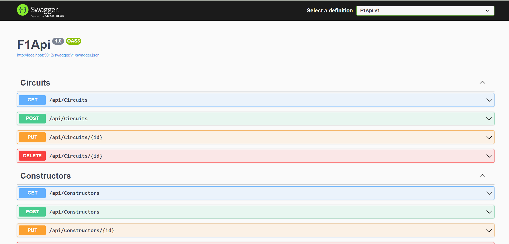2. Estructura del proyecte
El projecte compta amb una organització modular:
- Controllers: define las rutas y endpoints de la API.
- Models: conté las classes que representen les entitats de la base de dades.
- Data: conté el context de la base de datos (Fm1Context).
- FM1.db: archiu SQLite amb les dades de Fórmula 1.
- Program.cs: configuració de l'arrencada de l'aplicació.
- appsettings.json: configuració de la conexió y paràmetres globals.
3. Models
La carpeta Modelos o Models en el projecte de C# s'encarrega de definir les estructures de dades principals de l’aplicació. És a dir, aquí es defineix quina informació maneja l’ API i com es representa. En el nostre cas hem seguit el mateix model que vam decidir al prinicipi de tot en l’entrega 1. En Modelos tenim les seguentes estructures: :
- Circuits.cs: informació sobre los circuits.
- Drivers.cs: informació sobre los pilots.
- Constructors.cs: informació sobre los constructors.
Es va cambiar el tipus de dades int a string en el camp Code de
Drivers per permitir valors com “HAM” o “VER”. Com que aquests codis no són valors numèrics, considerem utilitzar un tipus string millor i adequadament.
Circuits.cs
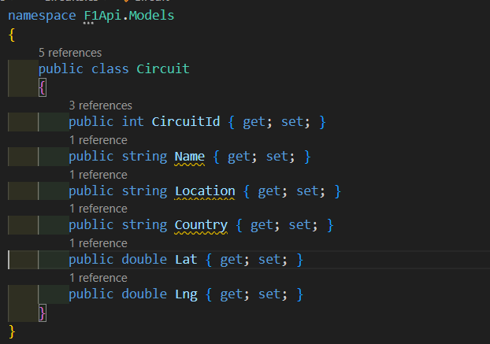 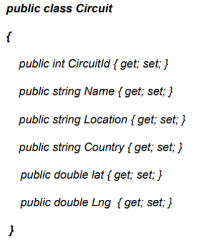Constructor.cs
 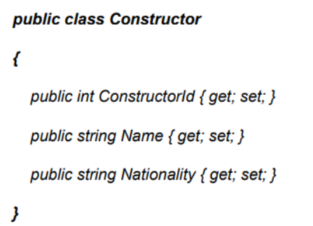
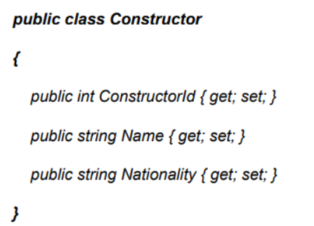
Drivers.cs
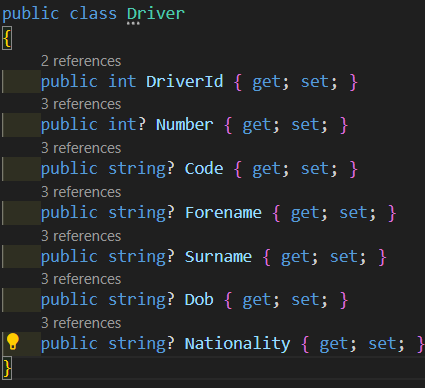 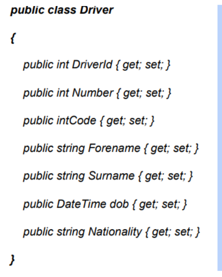4. Base de dades FM1.db
Per al nostre projecte de l’API de Fórmula 1, hem creat la base de dades FM1.db utilitzant DB Browser for SQLite de la manera següent: Teníem les dades de circuits, pilots i escuderies en fitxers CSV. Vam obrir DB Browser for SQLite, vam crear una nova base de dades anomenada FM1.db i vam utilitzar l’opció de importar CSV a taula per a cada fitxer. Cada CSV es va convertir en una taula dins de la base de dades: -Circuits amb columnes: CircuitId, Name, Location, Country, Lat, Lng. -Drivers amb columnes: DriverId, Number, Code, Forename, Surname, Dob, Nationality. -Constructors amb columnes: ConstructorId, Name, Nationality. En importar els CSV, vam assignar tipus de dades adequats: -int per a identificadors (CircuitId, DriverId, ConstructorId) i números de pilot (Number). -string per a text (Name, Location, Country, Code, Forename, Surname, Nationality). -double per a coordenades (Lat, Lng). Després d’importar els CSV, vam comprovar que totes les taules i columnes s’havien creat correctament i que les dades estiguessin completes i consistents. Un cop creada la base de dades, la vam utilitzar al projecte F1Api, configurant la cadena de connexió cap a FM1.db. Això ens permet realitzar operacions CRUD des de l’API utilitzant Entity Framework Core. .
- Circuits: CircuitId, Name, Location, Country, Lat, Lng
- Drivers: DriverId, Number, Code, Forename, Surname, Dob, Nationality
- Constructors: ConstructorId, Name, Nationality
Taula Circuits
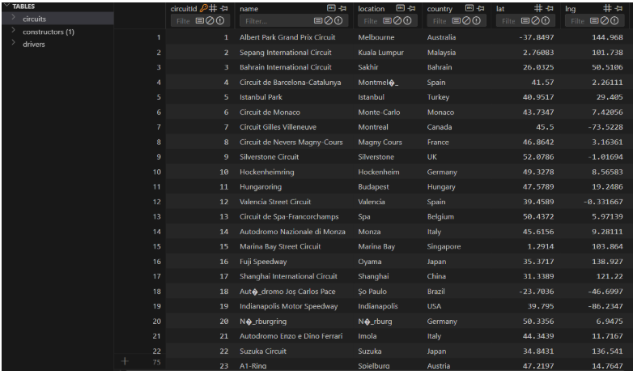Taula Constructors
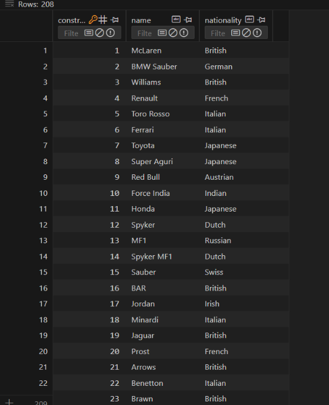Taula Drivers
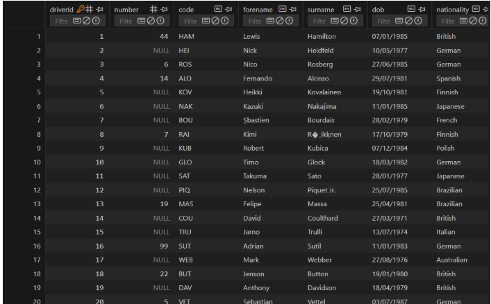5. appsettings.json
Define la cadena de conexión llamada F1Connection que apunta a FM1.db. También
incluye configuraciones de logging y CORS:
- ConnectionStrings: Aquesta secció defineix les cadenes de connexió a la base de dades. En aquest cas, "F1Connection" és el nom de la connexió i "Data Source=..." indica la ruta del fitxer de base de dades SQLite (FM1.db). Cada vegada que el teu codi necessiti connectar-se a la base de dades, farà servir aquest nom per obtenir la cadena de connexió. 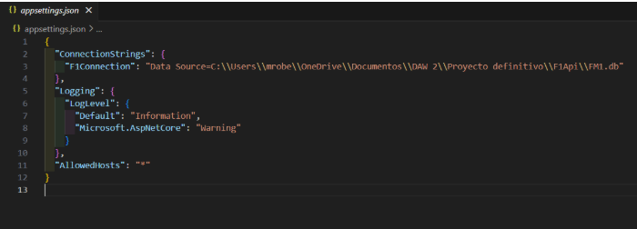
- Logging: Aquí es configura el registre de missatges. "Default": "Information" significa que es registren tots els missatges de nivell informació o superior, mentre que "Microsoft.AspNetCore": "Warning" limita els missatges generats pel framework ASP.NET Core només a advertències i errors. Això permet depurar sense omplir els logs amb missatges poc rellevants. 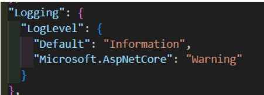
- AllowedHosts: Defineix quins dominis poden accedir a l’API. El valor "*" permet l’accés des de qualsevol host, cosa útil en desenvolupament; en producció normalment es restringeix a dominis específics per seguretat. 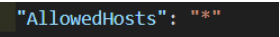

6. Program.cs
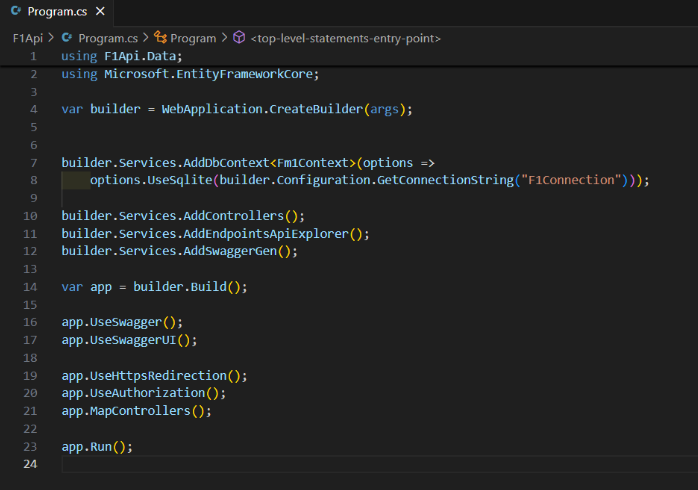- using F1Api.Data: importa l’espai de noms on es troba la classe Fm1Context, que és el DbContext (és a dir, la connexió i accés a la base de dades). using Microsoft.EntityFrameworkCore: permet utilitzar Entity Framework Core, la llibreria d’ORM que facilita treballar amb bases de dades en forma d’objectes. 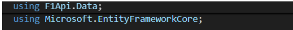
- Això crea un constructor (builder) per configurar serveis i la infraestructura de l’aplicació web. És el primer pas per preparar la nostra API. 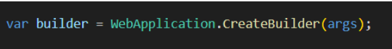
- AddDbContext registra la classe Fm1Context com a servei dins de l’aplicació. UseSqlite indica que la base de dades que farà servir és SQLite. builder.Configuration.GetConnectionString("F1Connection") obté la cadena de connexió (normalment guardada a appsettings.json) per saber on es troba la base de dades. 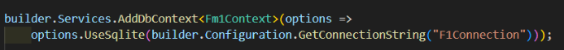
- AddControllers(): afegeix el suport per utilitzar controladors (les classes que contenen les rutes i endpoints de l’API). AddEndpointsApiExplorer(): permet explorar automàticament els endpoints de l’API (necessari per Swagger). AddSwaggerGen(): activa Swagger, una eina que genera documentació interactiva de l’API. 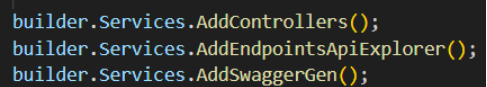
Aquí es construeix l’aplicació amb totes les configuracions fetes anteriorment
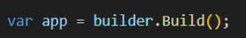- Activa Swagger i Swagger UI, que permet provar els endpoints des del navegador. 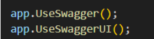
- Redirigeix tot el tràfic HTTP a HTTPS per més seguretat. 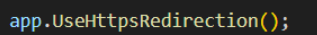
7. Autenticación
Para realizar operaciones sensibles (POST, PUT, DELETE) es necesario enviar una API_KEY. En este caso, la clave utilizada fue “TU_API_KEY”. Los métodos GET permanecen públicos.
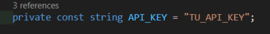 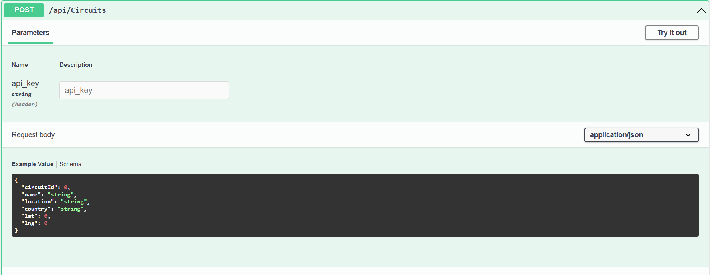 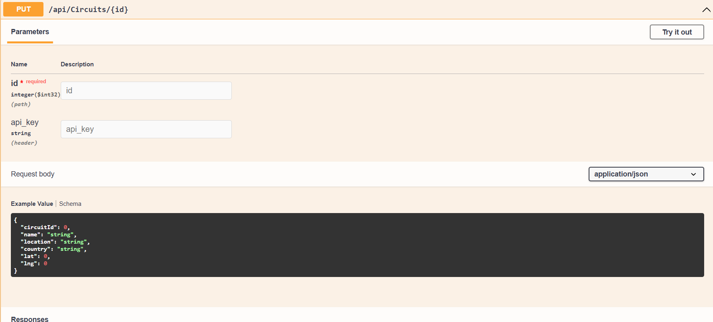 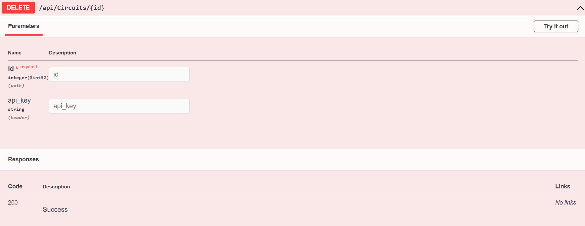8. Checklist de requisitos
| Recurso | GET | POST | PUT | DELETE |
|---|---|---|---|---|
| CIRCUITS | Implementado*1 | Implementado | Implementado*2 | Implementado |
| CONSTRUCTORS | Implementado*3 | Implementado | Implementado | Implementado |
| DRIVERS | Implementado | Implementado | Implementado | Implementado |
*1 Error en la dirección de la base de datos.
*2 Error al igualar la id requerida con
circuits.Circuits.id.
*3 Error en el nombrado de la ruta Constructors.
9. Errors detectats
- Ruta de la base de dades incorrecta.
- Error de mapatge d’IDs a Circuits.
- Nom de taula incorrecte a Constructors.
Aquest error ens va sortir perquè la ruta que havíem posat per accedir a la base de dades no era la correcta. Potser havíem mogut l’arxiu o el nom no coincidia. El que vam fer va ser comprovar on estava realment la base de dades i actualitzar la ruta a la configuració perquè apunti bé.
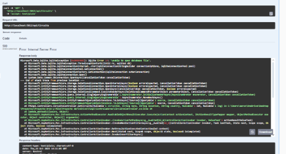 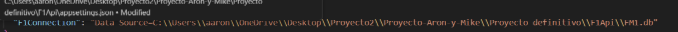En aquest cas, el problema era que els identificadors (IDs) de la taula Circuits no estaven ben relacionats amb els d’altres taules. Alguns no coincidien o estaven duplicats. El que vam fer va ser revisar les relacions entre les taules i corregir els IDs perquè tot quedés ben enllaçat.
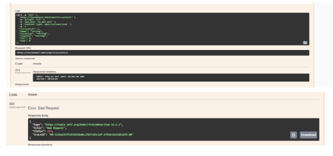Aquí l’error era perquè el nom de la taula que havíem posat al codi no coincidia amb el de la base de dades. Per exemple, al codi hi posava Constructors però a la base de dades estava com Constructor. Ho vam solucionar comprovant el nom exacte i posant-lo igual a tot arreu.
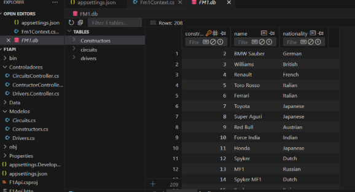10. Allotjament de l'API en C#
Durant el desplegament a IIS es va detectar un error HTTP 500.19 relacionat amb el mòdul AspNetCoreModuleV2. Tot i tenir instal·lat el Hosting Bundle de .NET 8, l’IIS no detectava els mòduls, cosa que impedia que l’API s’iniciés correctament.
Solució recomanada: reinstal·lar o reparar el Hosting Bundle, i verificar els permisos i els mòduls actius.
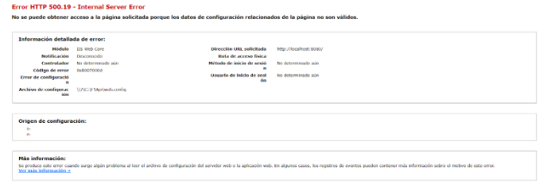Test de l'API
En aquest apartat posarem documentació sobre el que va ser el test general de l'API.
- CIRCUITS / GET 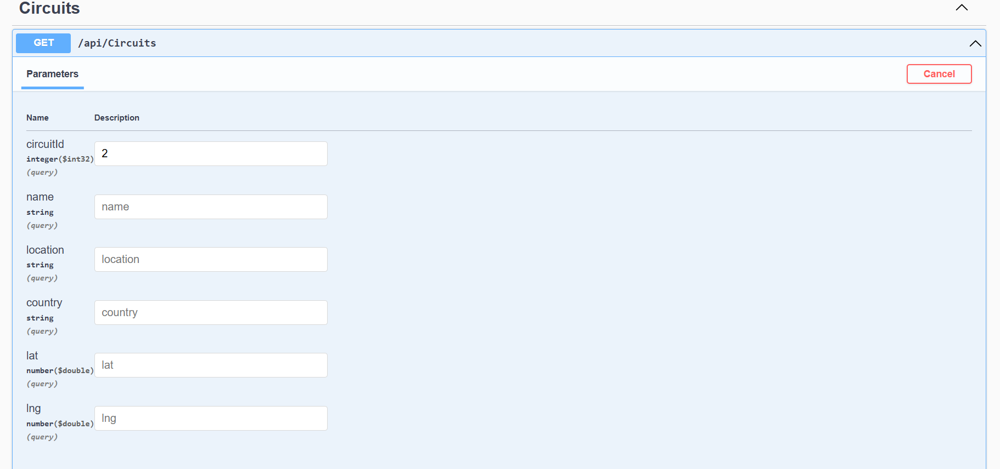 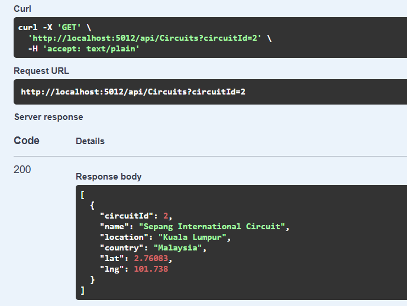 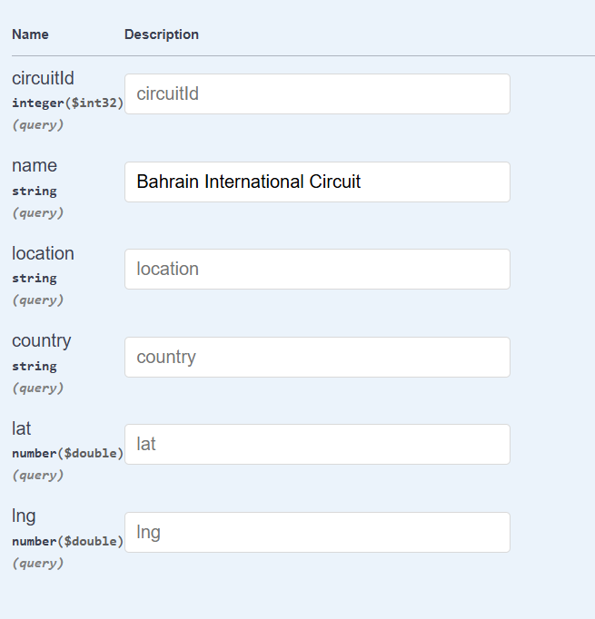 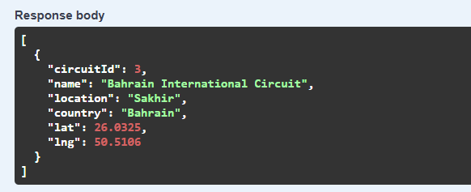
- CIRCUITS / POST 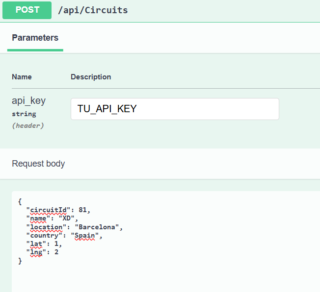
- CIRCUITS / PUT 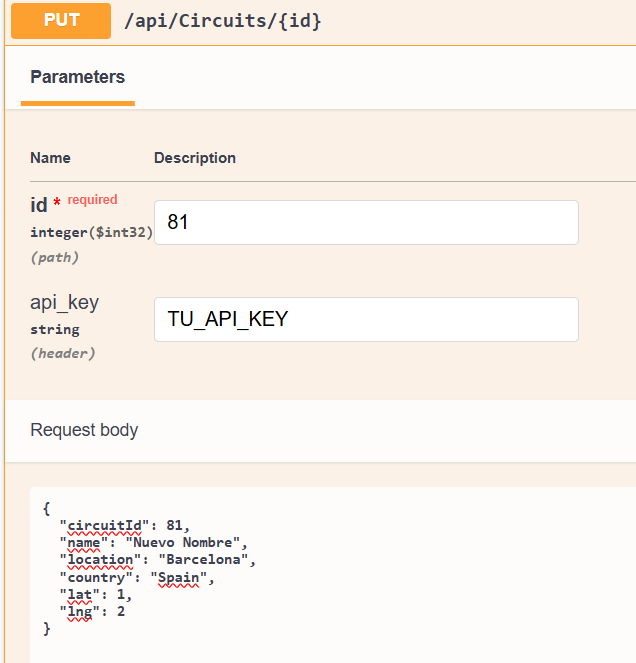 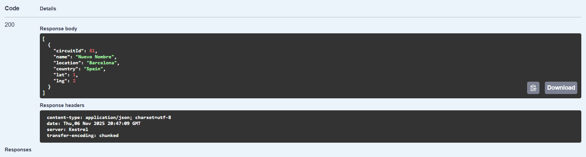
- CIRCUITS / DELETE 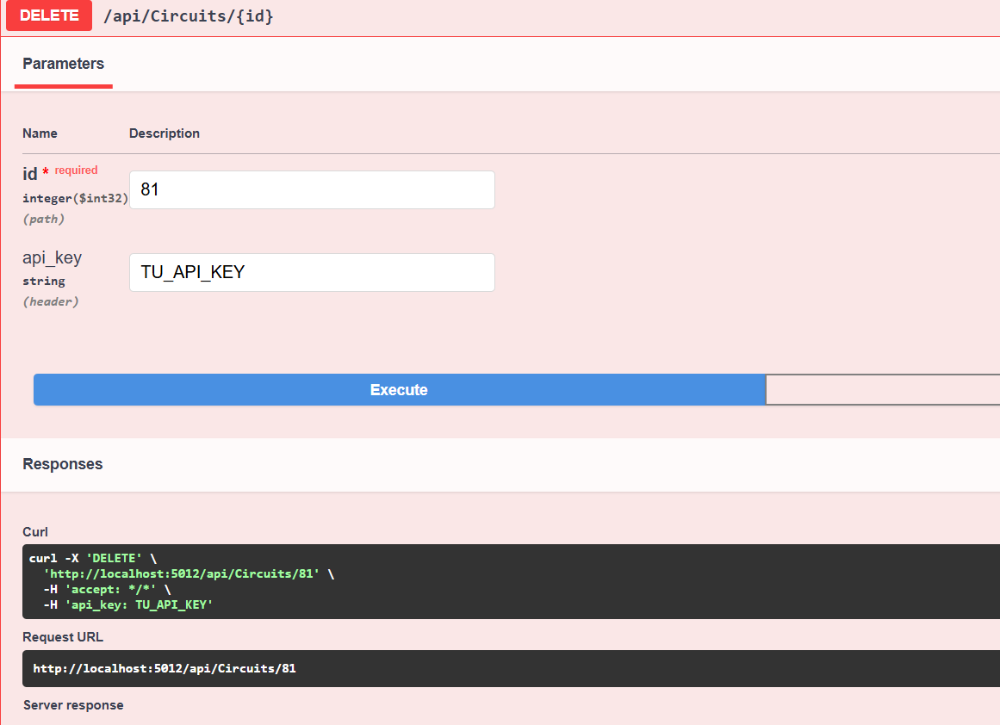 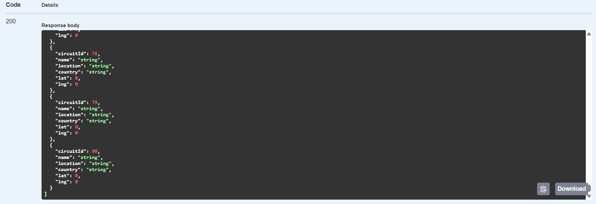
- CONSTRUCTORS / GET 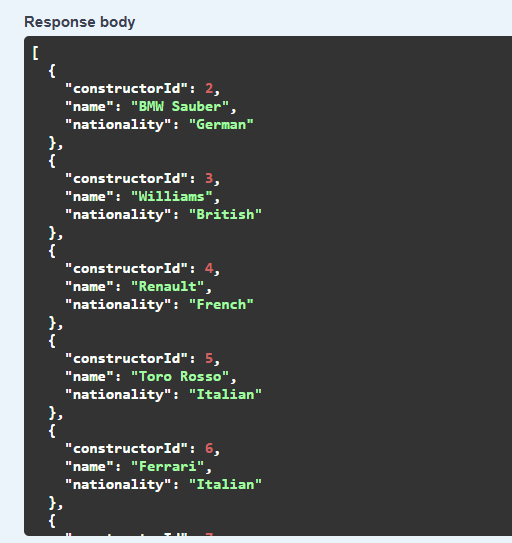 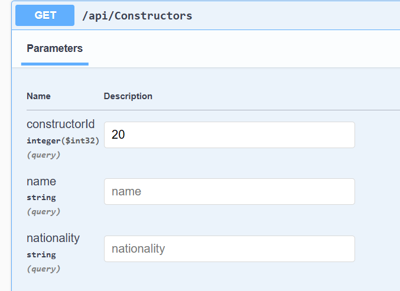 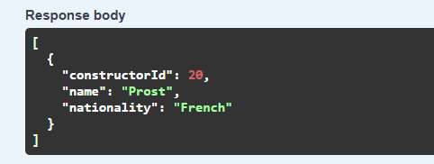
- CONSTRUCTORS / POST 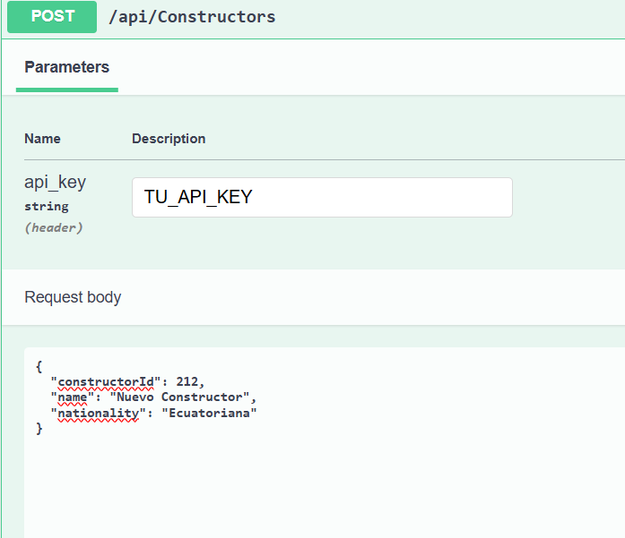 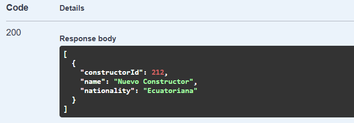
- CONSTRUCTORS / PUT 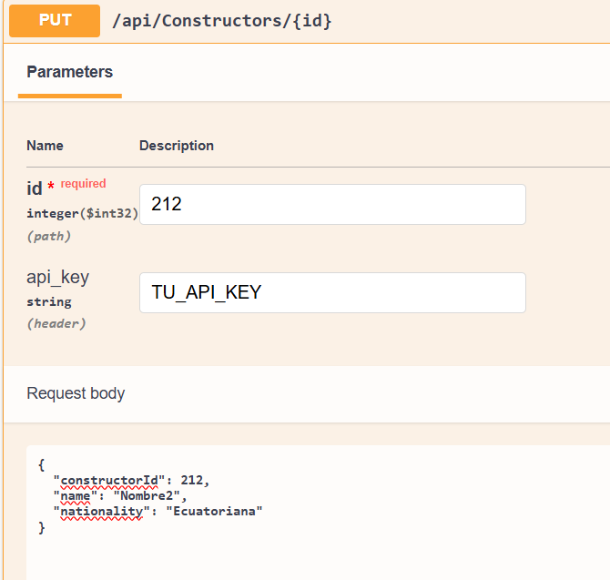 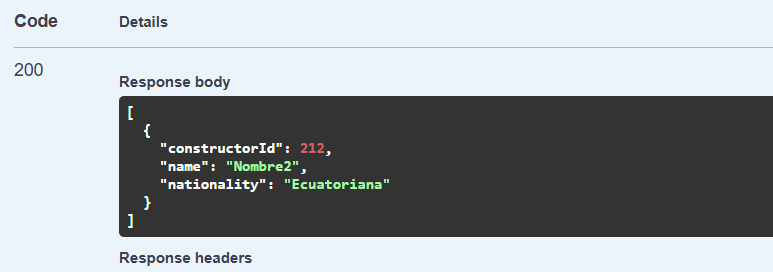
- CONSTRUCTORS / DELETE
- DRIVERS / GET
- DRIVERS / POST
- DRIVERS / PUT
- DRIVERS / DELETE

Quan provem la part de GET a Circuits i, per exemple, volem que ens mostri per ID, funciona correctament.
Passa el mateix si filtrem per nom o per les altres propietats, per tant, vam obtenir un resultat amb èxit i
funcionalitat.
 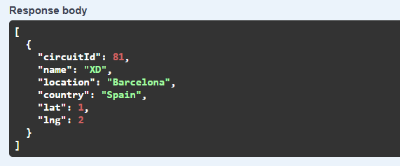
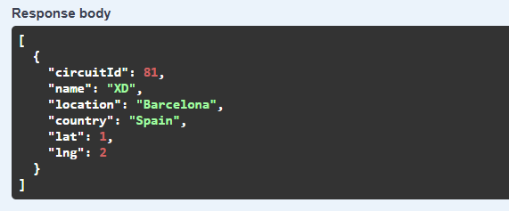
En la nostra API el mètode POST funciona correctament, ja que hem afegit un nou circuit amb noves
característiques.
En fer la comprovació amb el mètode GET filtrant per l’ID 81, ens mostra el nou circuit que hem afegit,
sobretot indicant
la API_KEY.
En aquest cas, amb el mètode PUT podem substituir característiques d’un circuit i afegir-ne de noves. Per
exemple,
amb el circuit que hem creat abans li canviem el nom i n’afegim un altre de nou. En verificar-ho amb el
mètode GET,
es mostra el circuit amb el nou nom.
 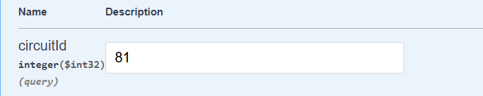
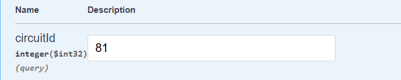
En el mètode DELETE, per comprovar si funciona, vam eliminar la nova pista creada per ID, en aquest cas amb
l’ID 81. En fer
la comprovació amb GET, veiem que ja no existeix el circuit amb l’ID 81 que havíem creat. Per tant, funciona
correctament.
En el mètode GET a Constructors podem observar que ens mostra tots els constructors i també per filtratge.
En aquest cas,
si demanem el constructor amb ID20 ens mostra el corresponent, i igual si busquem amb més filtres. Per tant,
funciona correctament.
Per comprovar el mètode POST a Constructors, afegim un nou constructor amb l’ID212. Per veure si funciona,
ho comprovem
amb el mètode GET filtrant per l’ID212, i en aquest cas ens mostra el nou constructor que hem creat.
Canviem el nom del constructor que havíem creat i li assignem el nou nom "NOM2". En verificar amb el mètode
GET,
podem observar que s’ha substituït el nom antic pel nou, donant un resultat amb èxit.
Eliminem el nou constructor per l’ID i ho comprovem amb el mètode GET. Podem observar que ja no existeix cap constructor amb l’ID212.


Per comprovar el mètode GET a Drivers, el filtrem per diferents característiques (CODE, Forename, Surname,
dob).
Podem observar que ens mostra els resultats demanats, per tant podem considerar el mètode GET com a exitós!
Creem un nou driver amb el mètode POST amb les característiques desitjades i comprovem si s’ha creat amb
èxit amb el mètode GET.
Podem observar que en posar Driverid 845 ens mostra el nou driver creat.
Modifiquem dades del driver nou que havíem creat i les guardem. Amb el mètode GET
podem observar que s’han substituït i canviat els valors antics pels nous. Per tant, funciona correctament!
Eliminem el driver que havíem creat per ID i, en voler mostrar-lo amb GET, ja no existeix. Funcionalitat exitosa.
Conclusió
Per acabar, podem dir que hem creat una API amb funcionalitats exitoses. Tot i això, hem hagut de treballar detall per detall perquè funcioni correctament, corregint errors i modificant codi. Estem satisfets amb el treball final que hem fet, i la veritat és que ha estat una bona manera de treballar amb C# i amb APIs. Sobretot, el treball ha estat cooperatiu i comunicatiu.